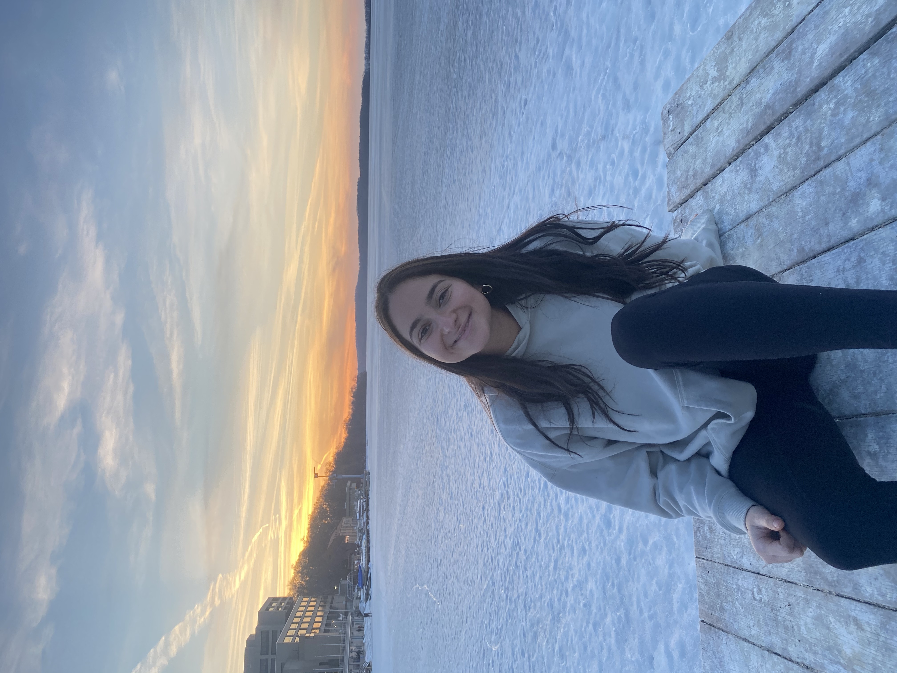

Hi! Welcome to my first website. I am a current senior at the University of Wisconsin-Madison majoring in Consumer Behavior and Marketplace Studies with certificates in business, entrepreneurship, and digital studies! I am orginally from San Diego, California but I love living in Madison now! As a young professional looking to start in the industry soon, I figured this would be a convinient place to showcase myself! Check out my resume for more information about me and my past experiences.
I am a very creative, people-oriented person and love anything that has to do with helping or working with others. Aside from my professional interests, I love hanging out with my friends, hiking, swimming, going to the beach, playing tennis, and trying out new recipes! I enjoy cooking with my family and love to learn about my heritage through recipes that my mom and grandma have taught me. I actually did not plan on this academic plan at all, it all worked out for the best though and I cannot be happier to be in Madison. I was selected in May to get off the waitlist here while I was away on a trip across the world without my family. I was told I had four days to decide and though I had never even visited, I decided to take a chance and try it out. That was one of the best decisions of my life. Addionally, I came into UW Madison as Pre Business meaning that I was going to apply to the business school. I found a major in the School of Human Ecology called Consumer Behavior and Marketplace Studies and immediatley loved it. I enjoyed having a unique perspective and was enjoying learning something that mattered to me. Last year, I was planning on studying abroad in Sydney, Australia. Obviously, that was not possible due to the pandemic and while I was dissapointed I took the chance to take classes that I was interested in and hadn't explored before. I ended up trying Art 107 and loved working with Photoshop and learning about digital media. Since then, I have been taking classes for my digital studies certificate and am sad that this is my last class ever. I hope to continue learning throughout my life. 